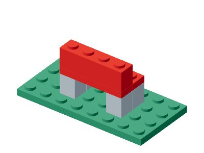
Garden Bench
8 件 · 2 个案例
18 个设计模型，36 个正反案例。旧版 5,120 个结构完整单列。

8 件 · 2 个案例
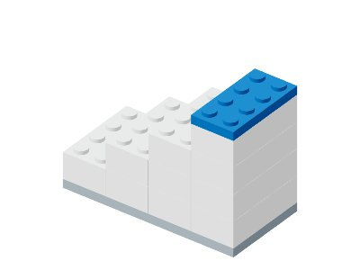
12 件 · 2 个案例
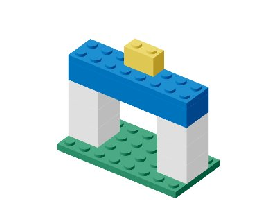
10 件 · 2 个案例
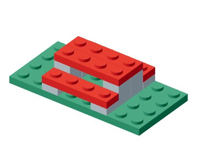
13 件 · 2 个案例

16 件 · 2 个案例
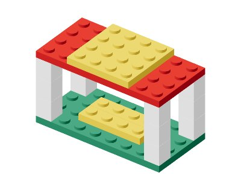
17 件 · 2 个案例

17 件 · 2 个案例
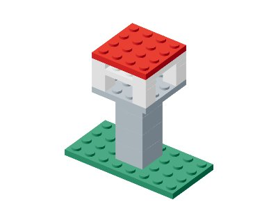
15 件 · 2 个案例
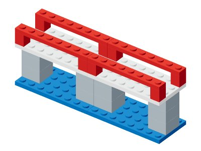
28 件 · 2 个案例
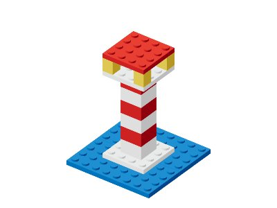
15 件 · 2 个案例
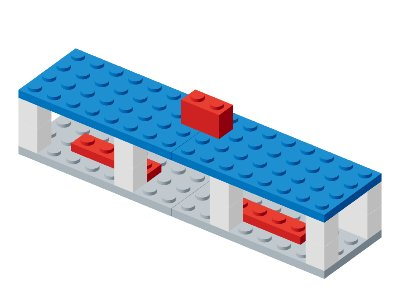
19 件 · 2 个案例
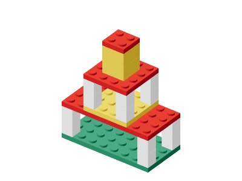
23 件 · 2 个案例
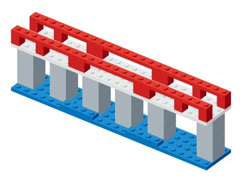
56 件 · 2 个案例
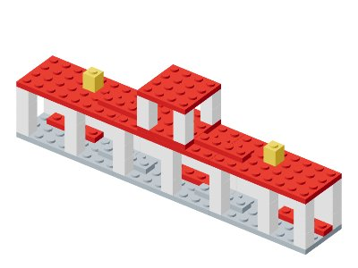
55 件 · 2 个案例

53 件 · 2 个案例

49 件 · 2 个案例

63 件 · 2 个案例

53 件 · 2 个案例